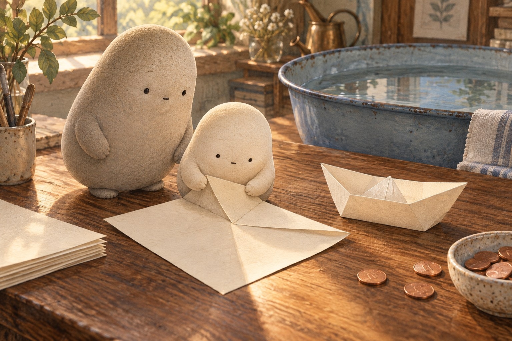
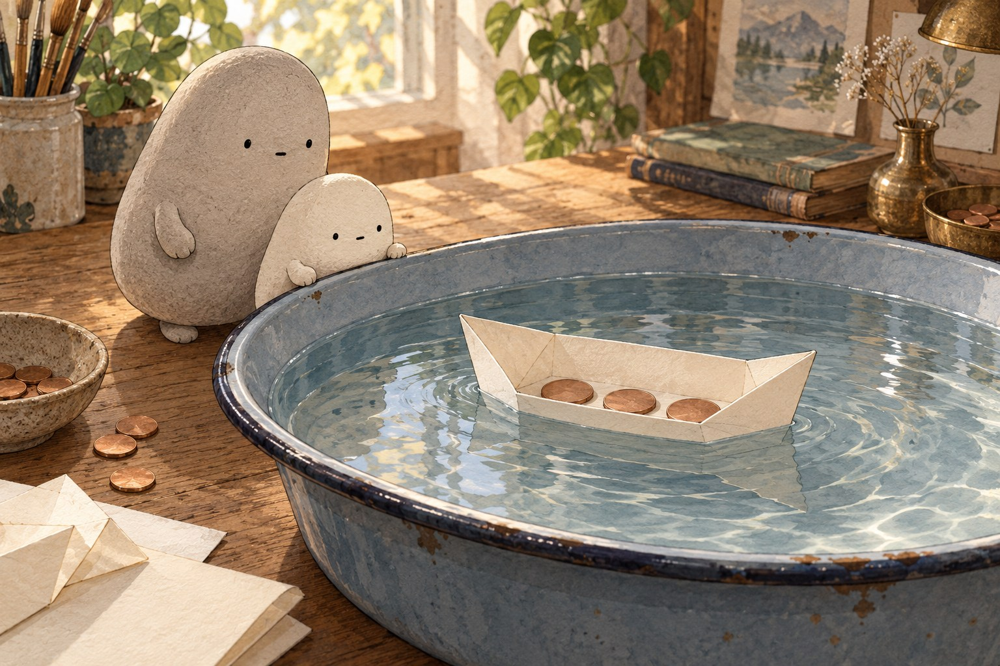
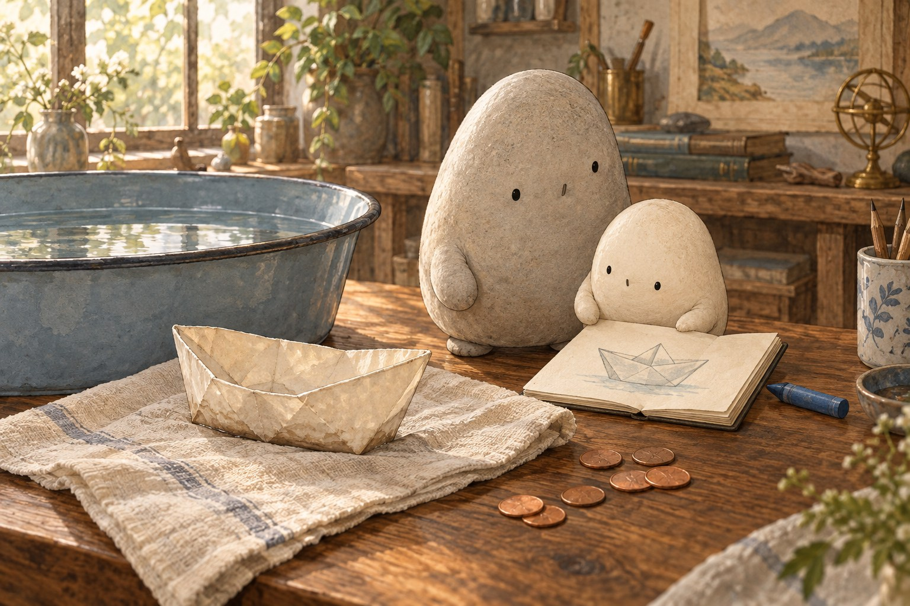

WONDER DAILY GRADE 3 · WRITING
Give the boat an instruction.
What holds a paper boat? · Curiosity day
Name __________________________ Date _______________
Choose one scene. Write one clear command sentence for Little’s boat. You may add a second step.



Draw the boat before or after your command. Add one label.
fold · boat · tub · penny · waterline · load · absorb · first · then
First, … tell how to begin folding
Then, … tell what to add or watch
Next time, … tell what to change or compare
Read your sentence. Does it tell what to do, using a command such as Fold, Add, Watch, or Compare?